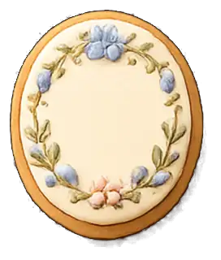

ブラウザで開く
Safari / Chromeがおすすめ。
atelier
写真・文字・シール・手書きを自由に重ねて、自分だけのデジタルジャーナルを。
01
BEFORE OPENING
最初だけ、4つをさらっと見てね。
Safari / Chromeがおすすめ。
いつも同じ入口から開けるよ。
右上の白い「本を管理」から、ときどき保存。
保存したバックアップから戻せます。
※ X・LINEなどのアプリ内ブラウザでは、保存場所が別になることがあります。MEMORIAは無料・アカウント登録なしで使えます。
MEMORIAをひらく02
A PEEK INSIDE
実際の画面写真は、あとからここへ。
03
YOUR DATA, YOUR DEVICE
本や写真のデータは、使っているブラウザの端末内に保存されます。
端末変更などに備えて、ときどき本棚バックアップを保存してください。

THE DOOR IS READY
今日残したいものを、ひとつだけ。